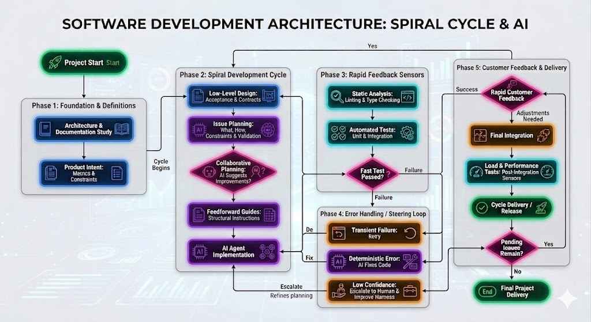

How I Build Software with AI in 2026: From Vibe Coding to Harness Engineering

AI didn't just speed up coding; it shifted the most important part of engineering somewhere else. I've been diving into so-called "intuitive programming"—or vibe coding—and the feeling is clear: the execution barrier has plummeted. Today, it's possible to build something in a few days that used to take weeks of manual work. Code itself has become cheaper. The challenge, now, is creating the conditions to ensure it comes out right.
In this process, I had to balance speed with confidence in what was being generated. I quickly realized that treating AI like an "intern"—reviewing every single line it writes—simply doesn't scale. Gradually, I shifted my focus: instead of spending all my energy on the prompt, I started designing a control system. Much of what I describe here came from the articles in the references, but also from trial, error, and adjustments that worked in my day-to-day.
Let's be honest: documentation and tests have always been important, but they were almost always the first things sacrificed when deadlines got tight. With AI, this shortcut exacts a heavy toll much faster. What used to seem like an acceptable trade-off is no longer sustainable. Robust tests and living documentation aren't nice-to-haves; they are the guardrails that make this way of working viable.
Below is, in a very practical way, how I've been running my projects today. I don't see this as theory; for me, it's a working model that blends my personal experience with practices from Harness Engineering and Specification-Driven Development. (For context, my current workflow orbits mainly around Cursor—with Opus or Sonnet, as far as their limits allow—Codex, and Antigravity). Another thing I've learned in practice is that the result varies significantly depending on the chosen model and how well the harness talks to it. Each model has its quirks: it handles long context better or worse, follows instructions differently, and uses tools in other ways. When this fit is right, the difference shows in the final result.

Step 1: The Foundation (I never start with code)
Before writing any lines, I try to clearly understand what problem I'm solving: what the product's goal is, where it starts and ends, and which constraints actually matter. From there, I draft a candidate architecture—not as the final truth, but as a serious blueprint for the system. It helps me see the whole picture, clarifies the main components, and gives me a direction to start, even knowing that part of this structure will change along the way.
- Candidate Architecture: Before implementing, I organize the system into blocks, responsibilities, and main flows. This reduces ambiguities, anticipates risk points, and prevents the agent from "inventing" structure mid-way.
- Living Documentation: I continuously use the project's documentation to guide the entire workflow. It acts as my single source of truth, preserves context, and serves as a constant reference for decisions, validations, and corrections.
Example: Below is an example of a candidate architecture for a RAG system, drawn in draw.io. The goal of this kind of diagram isn't to freeze the solution from the start, but to make components, data flows, and integration points visible before implementation.

Step 2: Collaborative Planning
After understanding the problem and sketching the candidate architecture, I move in short cycles, one feature at a time. The difference is that today I almost never jump straight into implementation. Before asking for code, I stop to really plan. This is when AI stops being just an executor and starts helping with reasoning as well.
- The "Spec Pack": In traditional software engineering, nothing is pushed to production without clear requirements; with AI, this discipline becomes even more critical. For each feature, I assemble a specification package defining the goal, constraints, acceptance criteria, input/output contract, and edge cases. If the AI doesn't know exactly what is expected of it, it fills the gaps with assumptions—and my control system loses even what it is supposed to validate.
Example — Spec Pack: RAG route protection (OIDC + role)
- Goal: Ensure only authenticated users with the required role can call the question, feedback, and user data routes.
- Constraints: Validate JWT via the provider's JWKS; RS256 algorithm; fixed issuer; public client with PKCE in the frontend; mandatory role configurable per environment.
- Acceptance criteria: Absence of
Authorization: Bearer→ HTTP 401 with a clear message; invalid or expired token → 401; valid token without the required role → 403 with text citing the expected role; with authentication disabled in development, behavior documented and zero risk of accidentally deploying to production. - Contract (I/O): Input:
Authorization: Bearer <token>header. Output: user context (subject,claims,roles) injectable into routes; errors in the standard API format. - Edge cases: Token without
sub;audas a string or list;rolesonly in the client'srealm_accessorresource_access; client disconnection during the stream.
- Execution Plan: I never simply say: "create endpoint X". Before any implementation, I describe the work steps, technical constraints, expected artifacts, and how the result will be validated. This preliminary conversation happens in the code agent's plan mode, precisely to organize the reasoning before opening the execution tap. The plan doesn't just guide the work; it also makes the process auditable.
- Space for AI: Before unlocking code generation, I ask the AI to review the plan, point out ambiguities, and suggest architectural or operational improvements. This is the moment to use the model to think together, before spending time and tokens building the wrong solution.
- Feedforward Guides: Alongside the plan, I provide feedforward guides: instructions given before execution to shape the agent's behavior from the start. This includes design patterns, folder conventions, mandatory contracts, and explicit templates. When these guide rails are clear, the chance of the code coming out right on the first try increases dramatically.
Step 3: Implementation and Fast Sensors (Keep Quality Left)
With the candidate architecture drawn and the plan validated, the agent finally springs into action. My comfort, however, doesn't come from assuming the AI will get it right on its own. It comes from the set of sensors surrounding the execution. The diagram and the Spec Pack from the previous step aren't there to decorate the process: they become concrete validation points.
I bring validation to the front of the flow. To shorten the trial, error, and correction cycle, I prioritize fast, objective sensors—linters, type-checking, contracts, unit tests, and automated validators. They aren't there to inflate metrics at the end of the process; they are there to make the agent notice early, locally, and clearly when it has derailed.
But there is an uncomfortable question: if the AI also writes the tests, how do we know these tests actually protect the system? This is where Mutation Testing comes in. I treat it as the true "sensor of sensors": by deliberately introducing changes to the logic, I verify if the suite actually fails when it should. This way, I avoid the false sense of security produced by superficial tests that pass with 100% success without validating the real behavior.
In practice, I concentrate mutation where the cost of error is high and the logic is highly branched—decision rules, policies, integrations, or processing cores with multiple paths. Instead of "mutating the whole repository," I choose a slice of the system with a dedicated, fast, and deterministic test suite, capable of validating the expected behavior without relying on slow or non-reproducible services. The mutation tool runs over this slice to answer a simple question: if the semantics change significantly, does the suite actually fail—or does it just pass for show?
In reality, when the agent violates a contract defined in Step 1 or 2 right in the terminal, one of these sensors catches the failure in seconds—often in milliseconds—and the correction cycle restarts with clear, local, and immediate feedback. This is what makes speed sustainable: not the absence of errors, but the ability to detect them way too early for them to spread.
Step 4: The "Control Loop" (How I handle AI failures)
And yes, agents still fail. Even the strongest models still make mistakes, get stuck in loops, ignore constraints, and sometimes defend the wrong answer with conviction. When this happens, I try not to treat the problem as an isolated generation accident. Most of the time, it reveals a flaw in my control process.
This is where the role of the Harness Engineer really kicks in. When something goes wrong, I resist the temptation to just correct the symptom in the editor. Instead of patching the broken function, I return to the environment and adjust the very system that guides, restricts, and validates the agent—my Control Loop.
- If the specification was vague, I make it more concrete with better examples, edge cases, and sharper acceptance criteria.
- If the tests failed to detect the problem, I add or strengthen the responsible sensor so that the same class of error is caught earlier next time.
- If the structure or patterns drifted, I turn the correction into a persistent rule in my feedforward guides, so the expected behavior becomes part of the rails.
A Real Failure Case: The Connection Leak
In a recent case, my generative agent built a solid database import structure, but omitted correctly closing connections when a failure occurred during retries with pools. It seemed like a small detail, but it was grave enough to cause connection exhaustion and future instability. Local sensors detected the problem rapidly.
Instead of opening the editor and manually inserting a .close() at the broken spot, I used the Control Loop: I updated my feedforward guides to require the use of context managers for all I/O communication in that context. By doing that, I didn't just fix that single error; I corrected how the agent would approach an entire class of similar problems moving forward.
Step 5: The Delivery Spiral and Client Feedback
After the feature passes through specification, sensors, and corrections, it leaves the workbench and heads to validation with the client. It is in this stage that I separate two things that shouldn't be confused: sensors say if the software remains consistent; the client says if it's solving the right problem. One does not replace the other.
In practice, I work in short sprints, with the client tracking the product almost every day. Instead of waiting for a massive delivery at the end of the cycle, I prefer showing small increments, harvesting quick feedback, and bringing that return straight back to the next planning phase. This reduces rework and prevents the team from spending too much time polishing something that, in the end, doesn't solve the right problem.
Each client comment loops back into the system: sometimes as a scope adjustment, sometimes as a Spec Pack refinement, sometimes as a new acceptance criteria. Human feedback feeds the next iteration the exact same way sensors feed technical correction. This mix of business validation with computational validation sustains the cadence.
When the feature matures in this short cycle and consistently passes local validations, only then does it make sense to trigger the heaviest layer of verification—end-to-end tests, load, stress, and infrastructure CI/CD checks. In summary: fast sensors sustain daily evolution; heavy validations in the cloud protect production delivery confidence.
The Limits of "Vibe Coding"
It would be naive to think this model solves everything. Current AI incredibly accelerates execution, organizes ideas, and produces surprisingly good initial versions. In clearly bounded contexts—with visible architecture, clear contracts, fast sensors, and frequent feedback—productivity gains are very real.
But this shifts drastically when we enter dense, legacy systems full of implicit rules. In codebases where crucial decisions live more in the team's informal memory than in reliable artifacts, where integration is fragile, refactoring is risky, and requirements are scattered across historical assumptions, vibe coding loses steam rapidly. In these environments, the agent doesn't find enough truth to reason securely; it merely fills in gaps with fragile inferences.
That's where high-quality documentation and robust tests cease to be "best practices" and become essential infrastructure. The more explicit context exists—recorded decisions, clear contracts, real examples, acceptance criteria, and a living system history—the higher the chances the model produces something useful and safe. And the better the test mesh, the sooner we can separate a convincing output from a genuinely correct solution.
This also alters the role of a good professional within the company. Relevant knowledge cannot remain trapped in someone's head or locked in informal chats; it needs to circulate through the team and become an artifact: documentation, tests, patterns, examples, and guides. Today, this sharing doesn't just benefit people—it also benefits the models. And this directly reflects on the quality of what the AI is able to generate.
In summary: AI amplifies execution capacity, but it doesn't replace technical judgment, architectural responsibility, or profound institutional knowledge. When this knowledge is well-distributed and well-instrumented, models work better. When it isn't, they only scale the pre-existing mess.
A Minimum Viable Harness (MVH)
In practice, a minimum viable harness can be boiled down to a few core elements:
- Explicit Context: Define the objective, scope, constraints, and acceptance criteria before asking for execution.
- Visible Architecture and Plan: Discuss the solution in plan mode, lay out the candidate architecture, and only after that advance to the code.
- Externalized Knowledge: Documentation, patterns, examples, and critical decisions need to leave people's heads and become artifacts.
- Model-Tuned Harness: Pick the model wisely and calibrate the harness to its nuances surrounding context, tooling, instructions, and output formats.
- Fast Sensors: Fire off linters, types, contracts, and local tests early, to shorten the correction cycle.
- Stopping Rule: If the agent fails to converge, stop, review the specification, and realign the rails before trying again.
The Bottom Line
In the end, I stopped casting myself as the manual reviewer for every single machine stumble. My job today is different: it's building the environment stringently around it—visible architecture, explicit specs, living documentation, strong tests, fast sensors, and a harness matched to the right model. When that's in place, AI ceases to be noise and becomes an execution powerhouse.
For me, this is the core shift. Engineering hasn't left the stage; it just relocated. Before, a huge chunk of the discipline lived in the act of writing every line. Now, it lives heavily in how we plan, restrict, validate, and iterate alongside agents. Code can be abundant. The hard part is still translating speed into reliability.
Artificial Intelligence gives me speed. Harness Engineering gives me direction. When both walk together, the outcome isn't just software that's faster to build—it's software that's better to operate, safer to evolve, and immensely less dependent on improvisation.
References & Further Reading
- AkitaOnRails: "37 dias de Imersão em Vibe Coding: Conclusão quanto a Modelos de Negócio"
- Loiane Groner: "Harness Engineering: The Missing Layer in Specs-Driven AI Development"
- The Pragmatic Engineer: "AI Tooling for Software Engineers in 2026"
- The Pragmatic Engineer: "The impact of AI on software engineers in 2026: key trends"
- Article: "Harness engineering for coding agent users"
Comentários
(Configuração do Giscus pode ser necessária com data-repo-id e data-category-id específicos)